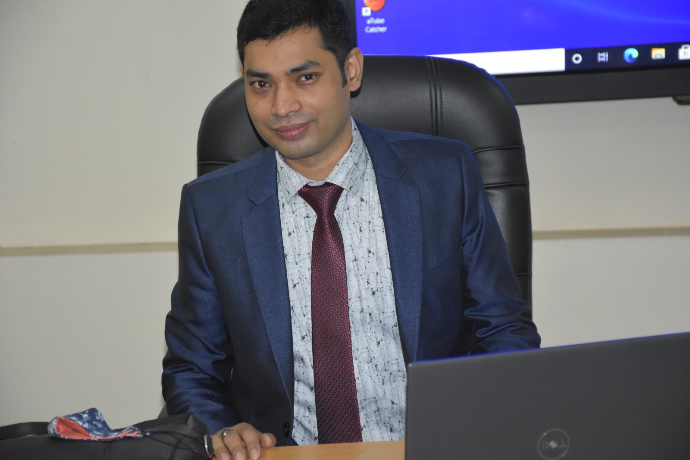

Moments & Memories
Associate Professor, Trainer & Assessor with 14+ years of experience in engineering education, teacher training, CBT&A methodology, and technical skills development.
Associate Professor | Technical Teachers' Training College, Dhaka
Engr. Tapas Kumer is a distinguished engineering educator and trainer with over 14 years of dedicated service in Bangladesh's technical education sector. A graduate of Rajshahi University of Engineering & Technology (RUET) with both B.Sc and M.Sc degrees in Electrical & Electronic Engineering, he has shaped the careers of thousands of educators and students.
His expertise spans Electrical Engineering, Electronics, Solar Systems, Power Systems, Digital Electronics, and CBT&A methodology. He has trained more than 4,000+ teachers and taught over 1,000+ students across Polytechnic Institutes and Technical Schools & Colleges nationwide.
A passionate advocate for Outcome Based Education (OBE) and competency-based training, he brings international exposure from training programs in South Korea and CPSC international initiatives, continuously working to modernize Bangladesh's technical education landscape.
Rajshahi University of Engineering & Technology (RUET)
MastersRajshahi University of Engineering & Technology (RUET)
Bachelor'sNew Govt. Degree College, Rajshahi
Higher SecondaryCompetency-Based Training & Assessment (CBT&A) professional certification for training delivery and assessment at Level 4.
NationalLevel-5 Master Trainer certification in CBT&A Methodology — highest professional trainer designation.
AdvancedColombo Plan Staff College (CPSC) international professional development certification.
InternationalInternational Teacher Training Fellowship (TTF) on Electrical Engineering subject, conducted in South Korea.
InternationalTechnical Teachers' Training College, Dhaka
Leading engineering education and teacher training programs at the apex institution for technical teacher training in Bangladesh. Designing curriculum, conducting training, and mentoring educators nationwide.
Technical Teachers' Training College, Dhaka
Delivered engineering education and teacher training programs. Conducted national-level CBT&A training programs, trained thousands of polytechnic instructors, and contributed to curriculum development and OBE implementation.
Rajshahi Polytechnic Institute, Rajshahi
Taught Electrical Engineering and Electronics subjects at diploma level. Supervised practical labs, guided student projects, and contributed to technical skills development programs for students.
Areas of deep technical knowledge and pedagogical expertise
AC/DC circuit analysis, network theorems, circuit design, and practical applications in engineering systems.
Analog and digital electronics, semiconductor devices, amplifiers, oscillators, and electronic system design.
Power generation, transmission, distribution, load flow analysis, and power system protection fundamentals.
Photovoltaic system design, solar energy applications, grid-tie and off-grid systems, and renewable energy integration.
Logic gates, combinational and sequential circuits, microprocessors, and digital system design.
Competency-Based Training & Assessment — curriculum design, training delivery, and assessment tool development.
Professional development programs for technical teachers, pedagogical methods, and instructional design at national scale.
OBE framework design, learning outcome mapping, curriculum alignment, and assessment strategy for technical institutions.
Teachers Trained
Students Taught
Research on physical layer security in wireless communication systems, examining the impact of fading and shadowing effects on secure communication performance.
Postgraduate thesis research conducted at Rajshahi University of Engineering & Technology (RUET), focusing on advanced topics in EEE.
Applied research into competency-based training methodologies and their integration with outcome-based education frameworks for Bangladesh's technical education system.
Comprehensive professional development for technical teachers — CBT&A, OBE, instructional methods, and assessment strategies.
EnquireStrategic consultancy for technical institutions on curriculum design, quality assurance, and educational policy.
EnquireSpecialized teaching of Electrical Engineering, Electronics, Solar Systems, and Power Systems for diploma and degree programs.
EnquireHands-on skills training programs for industry-ready technical professionals and trade workers.
EnquireExpert facilitation of Competency-Based Training & Assessment programs for educators and trainers at all levels.
EnquireDevelopment and review of OBE-aligned curricula, learning outcomes mapping, and program assessment frameworks.
Enquire
Whether you're interested in teacher training, academic collaboration, or engineering consultancy — I'd love to hear from you.
Dhaka, Bangladesh
Technical Teachers' Training College